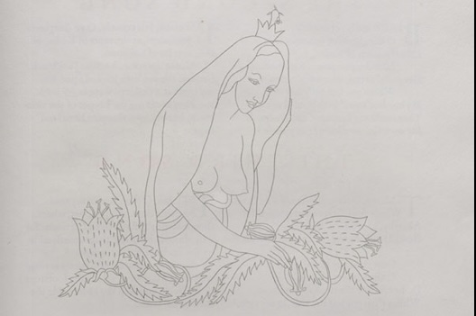

Moment 3
1853: The crisis of Anglicanism in the mid-nineteenth-century
King’s College was founded as an Anglican university. Its denominational identity, manifested most tangibly by the chapel’s position at the heart of King’s life, remained central to its wider ethos and approach to education throughout the nineteenth and into the twentieth century. Yet, this enduring association has never been uncomplicated. From debates over Jewish emancipation to controversies surrounding King’s fellow F. D. Maurice (dismissed in 1853), many of nineteenth-century Anglicanism’s key doctrinal debates can be tracked through the college’s evolving relationship to its founding creed. These unfolded against a backdrop of expanded theological teaching and at a time when a growing number of King’s alumni departed the college to take up clerical and missionary positions across the British empire. This research will examine both the implications of these debates within the college and, at the same time, look outwards from King’s to track how those leaving carried with them ideas and training encountered at King’s in ways that informed both religious practice and imperial power across Britain, Asia, sub-Saharan Africa, and the Caribbean.
So what question…
Implications of a denominational institution operating as a multifaith university in the present.